Средние узлы ремесла¶
Средних узлов ремесла: 225, по профессиям. Каждый из них предлагает варианты мастерства — они собраны в разделе «Мастерства ремесла».
Дровосек¶
| Название | Сектор | Эффект | |
|---|---|---|---|
| Chance to Shatter tree on Chopping | Beast | +5% шанса добыть одним ударом при рубке дерева | |
| Chopping area | Beast | Наносит ближайшим врагам 20% урона попадания при рубке | |
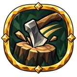 |
Chopping speed | Beast | 13% увеличение скорости атаки рубки |
| Extra log on chop | Стол | +5% шанса на прибавку брёвен | |
| Extra seed on chop | Стол | +5% шанса выбить семя случайной породы дерева | |
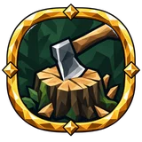 |
Feller's Craft | Beast | |
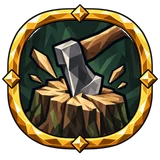 |
Heavy Fall | Beast | 30% увеличение урона по деревьям |
| Heavy Fall | Стол | 30% увеличение урона по деревьям | |
| Heavy Fall | Beast | 25% увеличение урона падающего ствола | |
| Heavy Fall | Beast | 25% увеличение урона падающего ствола | |
| Keen Edge | Beast | +10% шанса критического удара рубки | |
| Keen Edge | Beast | +25% урона критических ударов рубки | |
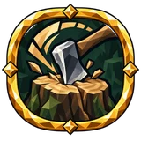 |
Steady Hands | Стол | +25% к окну тайминга рубящей серии |
| Timber Hauler | Beast | +5% шанса на прибавку брёвен 10% увеличение лёгкости телеги в руках |
|
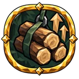 |
Timber Hauling | Beast | 50% увеличение вместимости древесины на ячейку |
| Timber Hauling | Beast | 15% уменьшение wood weight |
Земледелец¶
| Название | Сектор | Эффект | |
|---|---|---|---|
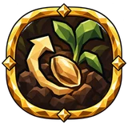 |
Chance to Save seed on Planting | Mead and Herbs | +8% шанса сберечь материалы при посадке |
| Chance to Save seed on Planting | Дорога | +8% шанса сберечь материалы при посадке | |
| Chance to Save seed on Planting | Дорога | +8% шанса сберечь материалы при посадке | |
| Chance to Save seed on Planting | Дорога | +8% шанса сберечь материалы при посадке | |
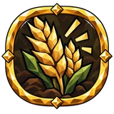 |
Cultivating stamina cost | Mead and Herbs | 10% уменьшение расход выносливости культиватора |
| Extra crop | Дорога | +5% шанса на прибавку урожая | |
| Extra seed on harvest | Mead and Herbs | +5% шанса на прибавку семян | |
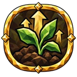 |
Growth speed | Mead and Herbs | 15% увеличение скорости роста посевов и саженцев |
| Harvest capacity | Дорога | 40% увеличение вместимости урожая и семян на ячейку | |
| Scythe area | Mead and Herbs | 15% увеличение области действия эффектов косы | |
| Scythe stamina cost | Mead and Herbs | 10% уменьшение расход выносливости косы | |
| Scythe swing speed | Mead and Herbs | 10% увеличение скорости атаки косы |
Искатель реликвий¶
| Название | Сектор | Эффект | |
|---|---|---|---|
| Chest item quantity | Горн | 15% увеличение chest item quantity | |
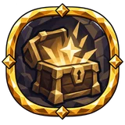 |
Chest item rarity | Горн | 15% увеличение chest item rarity |
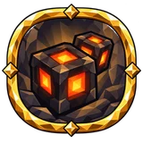 |
Extra dungeon loot | Горн | +8% шанса на прибавку подобранных предметов in dungeons |
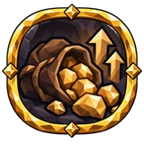 |
Item quantity | Timber | 5% увеличение количества предметов |
| Item quantity | Горн | 5% увеличение количества предметов | |
| Item quantity | Timber | 5% увеличение количества предметов | |
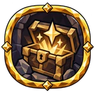 |
Item rarity | Горн | 10% увеличение редкости предметов |
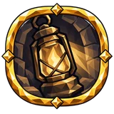 |
Lantern Keeper | Timber | 10% увеличение длительности горения факела |
| Lantern Keeper | Timber | 10% увеличение радиуса свечения факела или фонаря при себе | |
| Relic Seeker | Горн | 10% увеличение редкости предметов +8% шанса на прибавку подобранных предметов in dungeons |
|
| Torch comfort | Горн | +2 уровня комфорта с горящим факелом или фонарём при себе или рядом |
Кожевник¶
Корабельщик¶
| Название | Сектор | Эффект | |
|---|---|---|---|
| Chance to Save materials on Shipbuilding | Стол | +8% шанса сберечь материалы при постройке кораблей | |
| Fair Wind | Beast | +15% шанса малого попутного ветра | |
| Fair Wind | Beast | +15% к силе попутного ветра | |
| Guarded Hull | Beast | 15% увеличение built ship прочность | |
| Helmsman | Стол | 10% увеличение скорости корабля | |
| Helmsman | Стол | 10% увеличение скорости корабля | |
| Helmsman | Beast | 10% увеличение управляемости корабля | |
| Helmsman | Стол | 10% увеличение управляемости корабля | |
| Helmsman | Стол | 10% увеличение скорости корабля | |
| Helmsman | Beast | 10% увеличение скорости корабля | |
| Helmsman | Стол | 10% увеличение управляемости корабля | |
| Helmsman | Стол | 10% увеличение управляемости корабля | |
| Load-bearing Hull | Стол | +30 грузоподъёмности +10% к скорости построенных кораблей |
|
| Master Hull | Стол | +10% к скорости построенных кораблей | |
| Master Hull | Стол | +12% к управляемости построенных кораблей | |
| Sea Watch | Стол | +8% шанса на прибавку рыбы находясь на корабле | |
| Sea Watch | Стол | 15% увеличение радиуса открытия карты находясь на корабле | |
| Sea Watch | Стол | 15% уменьшение расход выносливости при плавании near your ship | |
| Swimming stamina cost near Ship | Beast | 15% уменьшение расход выносливости при плавании near your ship |
Кузнец¶
Кулинар¶
| Название | Сектор | Эффект | |
|---|---|---|---|
| Abundant Cook | Дорога | +5% шанса на прибавку блюд +8% шанса сберечь материалы при готовке |
|
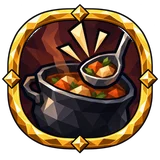 |
Chance to Save ingredients on Cooking | Mead and Herbs | +8% шанса сберечь материалы при готовке |
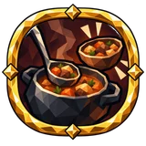 |
Cooking speed | Дорога | 13% увеличение скорости готовки |
| Cooking speed | Дорога | 13% увеличение скорости готовки | |
| Cooking speed | Mead and Herbs | 13% увеличение скорости готовки | |
| Crafted food duration | Дорога | 15% увеличение длительности еды своей готовки | |
| Crafted food duration | Mead and Herbs | 15% увеличение длительности еды своей готовки | |
| Crafted food duration | Mead and Herbs | 15% увеличение длительности еды своей готовки | |
| Crafted food nourishment | Дорога | 15% увеличение сытности еды своей готовки | |
| Crafted food nourishment | Mead and Herbs | 15% увеличение сытности еды своей готовки | |
| Extra meal on cook | Mead and Herbs | +5% шанса на прибавку блюд |
Медовар¶
| Название | Сектор | Эффект | |
|---|---|---|---|
| Brewing speed | Дорога | 15% увеличение скорости брожения медовух | |
| Cellar Racks | Горн | 25% увеличение вместимости медовух на ячейку | |
| Cellar Racks | Дорога | 25% увеличение вместимости медовух на ячейку | |
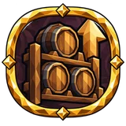 |
Cellar Racks | Горн | 25% увеличение вместимости масел на ячейку |
| Cellar Racks | Дорога | 25% увеличение вместимости масел на ячейку | |
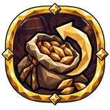 |
Chance to Save ingredients on Brewing | Дорога | +8% шанса сберечь материалы при варке |
| Extra mead on brew | Дорога | +5% шанса на прибавку готовая медовуха | |
| Extra mead on brew | Дорога | +5% шанса на прибавку готовая медовуха | |
| Extra oil on brew | Горн | +5% шанса на прибавку масла | |
| Extra oil on brew | Дорога | +5% шанса на прибавку масла | |
| Mead Craft | Горн | 15% увеличение крепости медовух своей варки | |
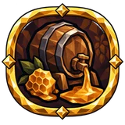 |
Mead Craft | Горн | 20% увеличение длительности медовух своей варки |
| Oil Craft | Горн | 15% увеличение крепости оружейных масел своей варки | |
| Oil Craft | Горн | 15% увеличение крепости оружейных масел своей варки | |
| Oil Craft | Дорога | 20% увеличение длительности оружейных масел своей варки | |
| Oil Craft | Горн | 20% увеличение длительности оружейных масел своей варки |
Охотник¶
| Название | Сектор | Эффект | |
|---|---|---|---|
| Chance to Save materials on Fletching | Mead and Herbs | +8% шанса сберечь материалы при изготовлении боеприпасов | |
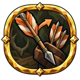 |
Extra ammo on craft | Mead and Herbs | +8% шанса на прибавку ammo |
| Extra ammo on craft | Стол | +8% шанса на прибавку ammo | |
| Extra game on kill | Mead and Herbs | +5% шанса на прибавку шкур | |
| Extra game on kill | Стол | +5% шанса на прибавку шкур | |
| Fletching speed | Mead and Herbs | 20% увеличение fletching скорость | |
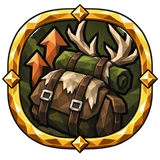 |
Game capacity | Mead and Herbs | 50% увеличение вместимости шкур, мяса и трофеев на ячейку |
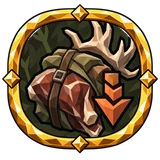 |
Game materials weight | Mead and Herbs | 15% уменьшение game weight |
| Noise | Mead and Herbs | 10% уменьшение шума | |
| Noise | Стол | 10% уменьшение шума | |
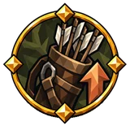 |
Вместимость боеприпасов | Mead and Herbs | 25% увеличение вместимости стрел, болтов и бомб на ячейку |
| Вместимость боеприпасов | Стол | 25% увеличение вместимости стрел, болтов и бомб на ячейку |
Охотник за головами¶
| Название | Сектор | Эффект | |
|---|---|---|---|
(без названия) own1253 |
Timber | ||
(без названия) own276 |
Горн | ||
(без названия) own461 |
Timber | ||
(без названия) own471 |
Timber | ||
(без названия) own856 |
Timber | ||
(без названия) own857 |
Timber | ||
(без названия) own871 |
Горн | ||
(без названия) own892 |
Timber | ||
(без названия) own893 |
Timber | ||
(без названия) own894 |
Timber |
Пчеловод¶
| Название | Сектор | Эффект | |
|---|---|---|---|
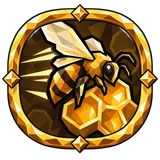 |
Beekeeping speed | Горн | 15% увеличение наполнения улья и сокосборника скорость |
| Beekeeping speed | Дорога | 15% увеличение наполнения улья и сокосборника скорость | |
| Beekeeping speed | Дорога | 15% увеличение наполнения улья и сокосборника скорость | |
| Extra honey | Горн | +5% шанса на прибавку мёда и смол | |
| Extra honey | Горн | +5% шанса на прибавку мёда и смол | |
| Extra honey | Дорога | +5% шанса на прибавку мёда и смол | |
| Extra queen on harvest | Горн | +5% шанса на прибавку пчёл | |
| Extra queen on harvest | Горн | +5% шанса на прибавку пчёл | |
| Extra queen on harvest | Горн | +5% шанса на прибавку пчёл | |
| Extra queen on harvest | Дорога | +5% шанса на прибавку пчёл | |
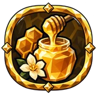 |
Honey nourishment | Горн | 15% увеличение hive honey potency |
| Honey nourishment | Дорога | 15% увеличение hive honey potency |
Рудокоп¶
| Название | Сектор | Эффект | |
|---|---|---|---|
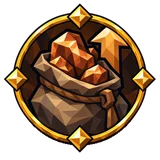 |
Carry weight | Timber | +30 грузоподъёмности |
| Chance to Shatter ore on Mining | Beast | +5% шанса добыть одним ударом при добыче рудной жилы | |
| Digging area | Beast | 25% увеличение области действия эффектов кирок | |
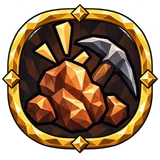 |
Extra ore on mine | Beast | +5% шанса на прибавку руды |
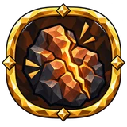 |
Fault Lines | Timber | +1 к числу слабых мест на залежи одновременно |
| Keen Strike | Beast | +10% шанса критического удара добычи руды | |
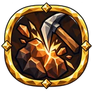 |
Keen Strike | Beast | +25% урона критических ударов добычи руды |
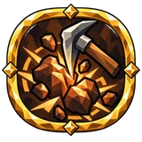 |
Mining area | Beast | Наносит ближайшим врагам 20% урона попадания при добыче руды |
| Ore Hauler | Timber | +30 грузоподъёмности +5% шанса на прибавку руды |
|
| Ore Hauling | Timber | 50% увеличение вместимости камня и руды на ячейку | |
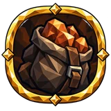 |
Ore Hauling | Timber | 15% уменьшение ore, bar и stone weight |
| Steady Pick | Timber | 13% увеличение скорости атаки добычи руды | |
| Steady Pick | Timber | 10% уменьшение расход выносливости добычи руды | |
| Weak spot duration | Timber | +20% ко времени до закрытия слабого места | |
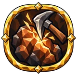 |
Weak spot rate | Timber | +25% к частоте появления слабых мест |
| Weak spot rate | Timber | +25% к частоте появления слабых мест | |
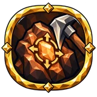 |
Weak spot size | Timber | +20% к размеру слабых мест |
| Глазомер | Timber | +1 к числу слабых мест на залежи одновременно | |
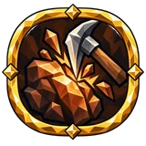 |
Урон по руде | Beast | 30% увеличение урона по руде |
Рунорез¶
| Название | Сектор | Эффект | |
|---|---|---|---|
| Carry weight | Beast | +30 грузоподъёмности | |
| Divine socket | Timber | +5% шанса божественного гнёзд | |
| Extra azurite | Beast | +5% шанса на прибавку азурита | |
| Extra rune | Timber | +5% шанса на прибавку рун | |
| Rare affixes | Timber | 10% увеличение редкость свойств при рунном ремесле | |
| Rich dust | Beast | +5% шанса на прибавку азуритовой пыли |
Рыбак¶
| Название | Сектор | Эффект | |
|---|---|---|---|
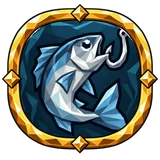 |
Angler's Craft | Дорога | |
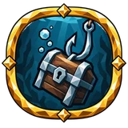 |
Chance for Treasure on Fishing | Дорога | +8% находки в улове |
| Chance for Treasure on Fishing | Дорога | +8% находки в улове | |
| Chance for Treasure on Fishing | Mead and Herbs | +8% находки в улове | |
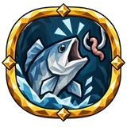 |
Chance to Bite on Fishing | Mead and Herbs | +10% шанса поклёвки |
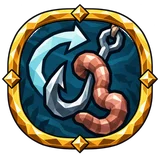 |
Chance to Save bait on Fishing | Дорога | +8% шанса сберечь материалы при рыбалке |
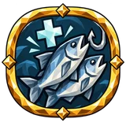 |
Extra fish per Rested charge | Mead and Herbs | +1% шанса вытащить лишнюю рыбу за каждый заряд бодрости |
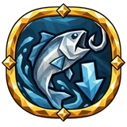 |
Fishing stamina cost | Дорога | 10% уменьшение расход выносливости рыбалки |
| Fishing stamina cost | Дорога | 10% уменьшение расход выносливости рыбалки | |
| Fishing stamina cost | Дорога | 10% уменьшение расход выносливости рыбалки | |
| Generous Waters | Mead and Herbs | +5% шанса на прибавку рыбы 15% увеличение скорости подматывания |
|
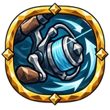 |
Patient Angler | Mead and Herbs | +10% шанса поклёвки 15% увеличение скорости подматывания |
Скотовод¶
| Название | Сектор | Эффект | |
|---|---|---|---|
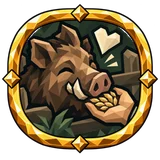 |
Animal Keeper | Mead and Herbs | 15% увеличение скорости приручения животных 15% увеличение сытости животных |
| Fed duration | Mead and Herbs | 15% увеличение сытости животных | |
| Fed duration | Стол | 15% увеличение сытости животных | |
| Fed duration | Стол | 15% увеличение сытости животных | |
| Offspring chance | Стол | 15% увеличение шанса приплода у прирученных животных | |
| Offspring chance | Mead and Herbs | 15% увеличение шанса приплода у прирученных животных | |
| Offspring chance | Стол | 15% увеличение шанса приплода у прирученных животных | |
| Taming speed | Mead and Herbs | 15% увеличение скорости приручения животных |
Следопыт¶
| Название | Сектор | Эффект | |
|---|---|---|---|
| Comfort by the fire | Горн | +2 уровня комфорта у горящего костра | |
| Comfort by the fire | Timber | +2 уровня комфорта у горящего костра | |
| Comfort by the fire | Горн | +2 уровня комфорта у горящего костра | |
| Corpse Run effect | Горн | +25% к силе эффекта «Бег мертвеца» | |
| Corpse Run effect | Горн | +25% к силе эффекта «Бег мертвеца» | |
| Corpse Run effect | Timber | +25% к силе эффекта «Бег мертвеца» | |
| Jump stamina cost | Timber | 10% уменьшение расход выносливости в прыжке | |
| Map reveal radius | Timber | 10% увеличение радиуса открытия карты | |
| Map reveal radius | Timber | 10% увеличение радиуса открытия карты | |
| Movement speed | Горн | 5% увеличение скорости передвижения | |
| Movement speed | Timber | 5% увеличение скорости передвижения | |
| Rune sight range | Timber | 25% увеличение rune monolith sensing range | |
| Spring Step | Timber | 10% увеличение высоты прыжка | |
| Swimmer | Timber | 10% уменьшение расход выносливости при плавании | |
| Swimmer | Timber | 10% увеличение скорости плавания | |
| Мягкое падение | Timber | 8% уменьшение урона от падения | |
| Мягкое падение | Timber | 8% уменьшение урона от падения |
Собиратель¶
| Название | Сектор | Эффект | |
|---|---|---|---|
| Extra forage | Горн | +5% шанса на прибавку собранных ресурсов | |
| Extra forage | Дорога | +5% шанса на прибавку собранных ресурсов | |
| Extra forage | Горн | +5% шанса на прибавку собранных ресурсов | |
| Forage capacity | Дорога | 20% увеличение вместимости трав, ягод и грибов на ячейку | |
| Foraging area | Дорога | +3 м радиуса массового сбора | |
| Forest Bounty | Дорога | +5% шанса на прибавку собранных ресурсов 20% увеличение вместимости трав, ягод и грибов на ячейку |
|
| Pickup radius | Дорога | 20% увеличение радиуса подбора предметов | |
| Wild Growth | Горн | 20% увеличение радиуса подбора предметов 20% увеличение скорости отрастания |
|
| Wild regrowth speed | Горн | 20% увеличение скорости отрастания |
Строитель¶
| Название | Сектор | Эффект | |
|---|---|---|---|
| Building cost | Beast | +15% снижения стоимости построек | |
| Building rain damage resistance | Beast | +25% стойкости построек к дождю | |
| Building range | Стол | +5 м дальности строительства | |
| Built shelter comfort | Beast | +3 уровня комфорта | |
| Built structure durability | Beast | 15% увеличение прочности возведённых построек | |
| Light source fuel consumption | Стол | −25% к расходу топлива построенными светильниками | |
| Wide Mending | Стол | +4 м к радиусу починки | |
| Wood recovery on salvage | Стол | +8% шанса вернуть каждую потерянную единицу дерева при разборе | |
| Wood recovery on salvage | Beast | +8% шанса вернуть каждую потерянную единицу дерева при разборе | |
| Workbench range | Beast | 25% увеличение радиуса верстака |
Без категории¶
| Название | Сектор | Эффект | |
|---|---|---|---|
| Azurite hauling | Beast | 15% уменьшение azurite, azurite dust и rune weight | |
| Extra socket | Timber | +5% шанса на прибавку гнёзд | |
| Higher affix tiers | Timber | 10% увеличение rune-crafted affix tier | |
| Thrifty carving | Timber | 7.5% уменьшение rune crafting cost |
Данные из Path of Valheiman 5.3.6, извлечены 2026-10-27.